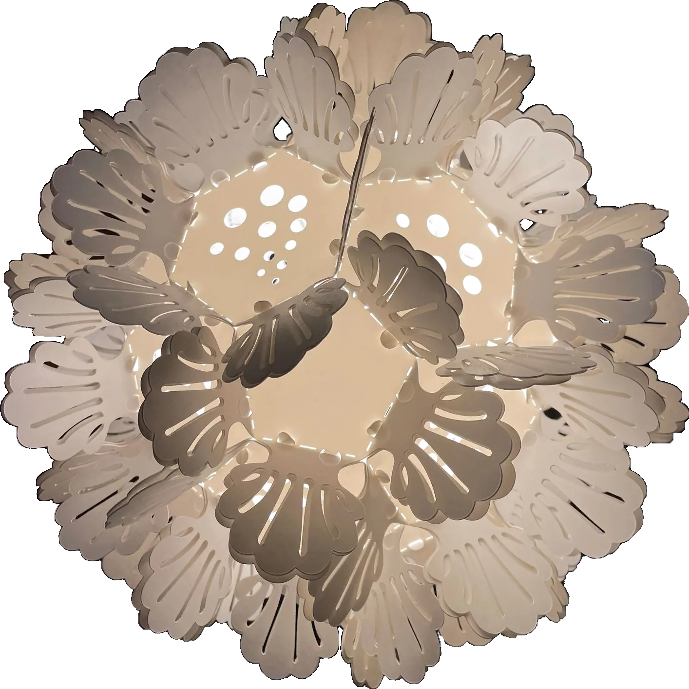
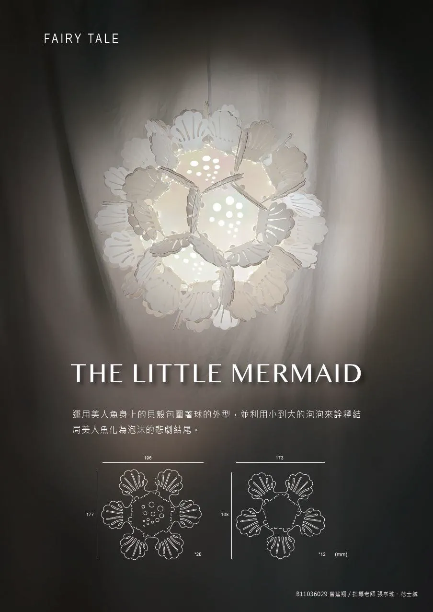

Lighting
The Little Mermaid 小美人魚紙燈
Shells ring a sphere, with bubbles rising through it. The shapes are laser-cut from board and assembled around a bulb. 主題風格採用童話故事的小美人魚,風格元素使用貝殼環繞 加上水中氣泡去設計,製作則用紙板雷切出設計的形狀,放入燈泡後,拼出紙燈的形狀。
- Type
- Lighting design
- Material
- Laser-cut board — 紙板雷切

01
Bubbles 泡泡
The bubbles are not decoration. They run small to large across the shade, because that is how the story ends — the mermaid turns to foam. 運用美人魚身上的同類包圍著球的外型,並利用小到大的泡泡 來詮釋結局美人魚化為泡沫的悲劇結尾。
